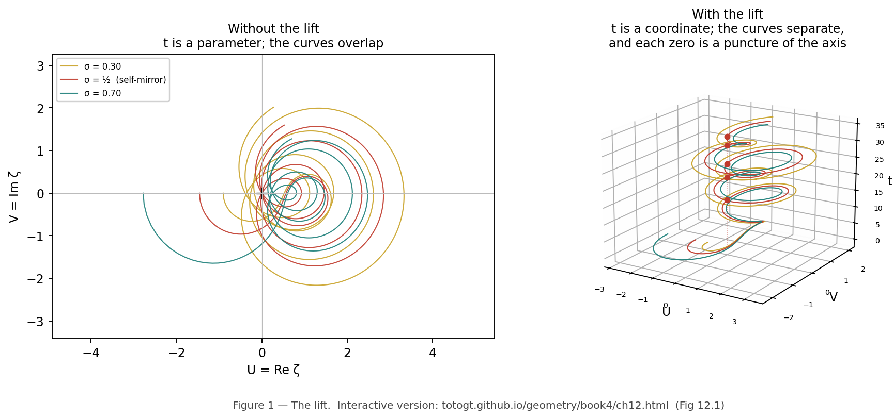

This chapter does not prove the Riemann Hypothesis. It identifies a precise path that, if followed, would connect the GTCT operator chain to RH via the Connes–Consani programme. The path has three obstacles. Each is stated as a mathematical obligation precise enough for a specialist to attempt.
The chapter exists because the verified work in this corpus — in particular the noncommutativity results in ZeoliteCommutation.lean and the contact manifold structure in CatGT — sits in the same mathematical neighborhood as the Connes–Consani approach to RH. Stating the conjecture precisely is itself a contribution: it identifies what would need to be true, and what would need to fail, for the connection to exist.
The catalyst contact manifold is defined in CatGT (totogt.github.io/io):
where r is pore aperture, θ is catalytic cycle phase, z is reaction coordinate. The contact condition α_cat ∧ dα_cat ≠ 0 holds everywhere. proved
The Reeb vector field R = ∂_z has integral curves (r₀, θ₀, z₀ + t) — helical attractors. proved
On a 3-site ring with real amplitudes, three noncommutativity facts are proved:
caution The commutator = −6 is specific to the 3-site ring with real amplitudes. It is not a general statement about the GTCT operator chain. Its connection to the adèle ring is Obligation 3 — stated precisely below, not established.
The arithmetic contact manifold X_arith carries the form (Book 4, Ch 11–13):
where g(σ,t) = −Im(ζ'/ζ(σ+it)) is the von Mangoldt coefficient. The local decomposition over primes is: proved — classical (Euler product)

There exists a contact embedding
— a smooth injection satisfying φ*α_arith = α_cat — such that:
(i) Structure preservation: φ preserves the contact condition. φ*(α_arith ∧ dα_arith) = α_cat ∧ dα_cat ≠ 0.
(ii) Noncommutativity transport: The DNLS operator noncommutativity on finite lattices — the kernel-verified commutator = −6 on the 3-site ring — is the restriction of the idèle class group action noncommutativity to finite subgroups of the adèle ring A = ℝ × ∏_p ℚ_p.
(iii) Zeros correspondence: Under φ, the stable fixed points of G = U∘F∘K∘C correspond to the non-trivial zeros of ζ(s) on the critical line σ = ½.
Consequence: If (i)–(iii) hold, then non-integrability of α_arith — equivalent to RH in the Book 4 framework — follows from the verified non-integrability of α_cat on X_cat.
This conjecture is falsifiable. If no contact embedding exists (Obligation 1 fails), or if the embedding does not preserve the contact condition (Obligation 2 fails), the conjecture is refuted. Refutation is also a result.
What is needed: Construct an explicit map φ: ℝ³ → X_arith, where X_arith lives in the adèle ring A = ℝ × ∏_p ℚ_p.
The obstacle: X_cat is a smooth manifold over ℝ. X_arith is an adelic object — a product of real and p-adic completions. These live in different categories. A smooth map between them requires either:
Option (b) is the correct path. The cylindrical coordinates (r, θ, z) are real; their p-adic analogues require choosing a p-adic norm on each coordinate.
Recommended first step: Construct the function-field analogue (see §4). If the embedding exists over 𝔽_q(X), the number-field case becomes tractable.
Compute requirement: Sage or Magma for the function-field case. Lean 4 + Mathlib for formal verification — Mathlib has finite field and algebraic curve support. Estimate: 2–4 weeks for a specialist in arithmetic geometry.
What is needed: Verify that φ*(α_arith ∧ dα_arith) = α_cat ∧ dα_cat.
The obstacle: α_arith is defined in terms of ζ'/ζ. Computing its pullback requires understanding how φ transforms the von Mangoldt coefficients g_p(σ,t).
What would make this tractable: If φ maps the helical coordinate z to the imaginary part t of s = σ + it, and the radial coordinate r to σ, then the pullback condition becomes a relation between the DNLS nonlinearity λ and the local Euler factors. This is speculative but precise enough to check numerically first.
Formal statement to check:
This is a single equation in two variables. If it has a solution (r(σ), θ(t)) for each prime p, the contact condition is preserved locally.
Compute requirement: Numerical verification first — plot g(σ,t) along the critical line and compare to r²(σ). If the curves match, a formal proof is the target. This is accessible with Python/NumPy before any formal verification.
What is needed: Show that [coupling, onsite] = −6 on the 3-site ring is the restriction of [L, M] in the idèle class group algebra, where L and M are the operators corresponding to coupling and on-site fold in the adelic function space L²(C_K).
The obstacle: The idèle class group C_K = A*/K* acts on L²(C_K) by translation. Connes' noncommutativity is between this action and multiplication operators. Connecting this to DNLS coupling and on-site fold requires:
The deep issue: The commutator of translation T_a and multiplication M_f on L²(ℝ) is [T_a, M_f] = (f(x+a) − f(x))M_1 — not a scalar. The DNLS commutator = −6 is a scalar. Either the 3-site discreteness is essential to getting a scalar (plausible), or a different identification is needed. This is the hardest open point in the conjecture.
Compute requirement: Representation theory of finite groups embedded in adèlic groups. GAP (Groups, Algorithms, Programming) or Magma. This likely cannot be resolved by Lean 4 alone without a substantial theoretical advance first.
Over the function field 𝔽_q(X) for a smooth projective curve X over 𝔽_q, the Riemann Hypothesis is proved (Weil 1948, Deligne 1974). The zeta function Z(X,T) is rational in T, satisfies a functional equation, and its zeros lie on |T| = q^{−1/2}. The proof goes through Riemann-Roch — a geometric theorem about curves over finite fields.
The GTCT contact framework, if valid, should reproduce this as a special case. If it cannot, the conjecture is in trouble. If it can, it provides a template for the number-field case.
Over 𝔽_q(X), the contact manifold X_cat,𝔽_q embeds into the function-field adèle ring A_𝔽_q as a contact submanifold, and the non-integrability of α_arith on X_arith,𝔽_q follows from Riemann-Roch.
If this holds, it confirms: (a) Obligations 1 and 2 are achievable in principle; (b) the function-field case provides a template; (c) Mathlib's finite field machinery gives a concrete Lean 4 target.
Lean 4 target for the function-field case:
-- Target theorem: not yet attempted.
-- Requires Mathlib: FiniteField, AlgebraicCurve, ContactManifold (if available),
-- or a manual construction of the contact structure over 𝔽_q.
theorem gtct_function_field_contact
(q : ℕ) (hq : Nat.Prime q)
-- X : AlgebraicCurve over 𝔽_q (Mathlib support: partial)
-- X_cat_fq : ContactManifold (needs construction)
-- X_arith_fq : AdelicManifold (needs construction)
:
∃ (φ : X_cat_fq → X_arith_fq),
IsContactEmbedding φ ∧
PullbackPreservesNonIntegrability φ := by
sorry -- target, not yet attempted
This is an honest sorry — a target, not a hidden gap. The definitions of X_cat_fq, X_arith_fq, and IsContactEmbedding need to be constructed in Lean 4 before the theorem statement is even well-typed. That construction is itself non-trivial work.
| This framework (GTCT / Book 4) | Connes–Consani (1999–2016) | Status |
|---|---|---|
| Contact manifold (X_cat, α_cat) | Spectral triple (A, H, D) | analogy |
| α_arith ∧ dα_arith ≠ 0 | Spectral gap of D; positivity of Weil explicit formula | analogy |
| Adelic decomposition α = Σ_p α_p | Local factors of the L-function | proved — classical |
| DNLS commutator = −6 (3-site ring) | Noncommutativity of idèle class group action | Obligation 3 |
| Contact embedding φ: X_cat → X_arith | No direct analogue — new claim | Obligation 1 |
| Function-field case as proof of concept | Weil/Deligne — known | not yet reproduced in GTCT |
Both frameworks reduce RH to a positivity condition. The contact-geometric language is new; the underlying mathematics is in the same neighborhood as Connes'. The comparison table above is an analogy table, not a formal equivalence. This chapter is the first step toward making it formal. analogy
| Priority | Task | Tool | Difficulty | Time estimate |
|---|---|---|---|---|
| 1 | Function-field proof of concept (§4) | Sage / Lean 4 + Mathlib | Hard | 2–4 weeks |
| 2 | Obligation 2: numerical contact check | Python / NumPy first | Medium (numerical) | 1–2 days |
| 3 | Obligation 1: embedding existence | Magma / Lean 4 | Very hard | Months |
| 4 | Obligation 3: noncommutativity transport | GAP / Magma | Very hard | Months–years |
Start with Priority 1. If the function-field proof of concept fails, Obligations 1–4 are moot. If it succeeds, it becomes the template for everything else and substantially de-risks the remaining obligations.